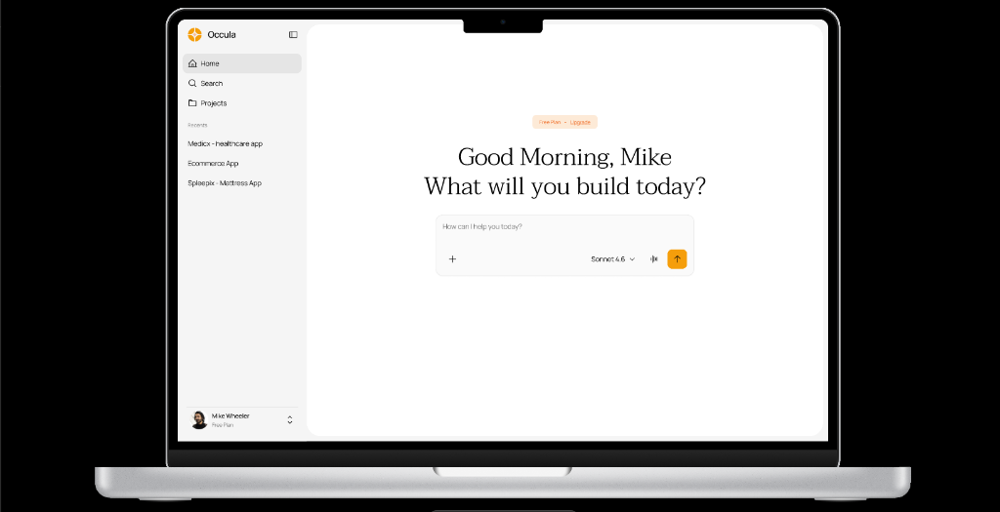
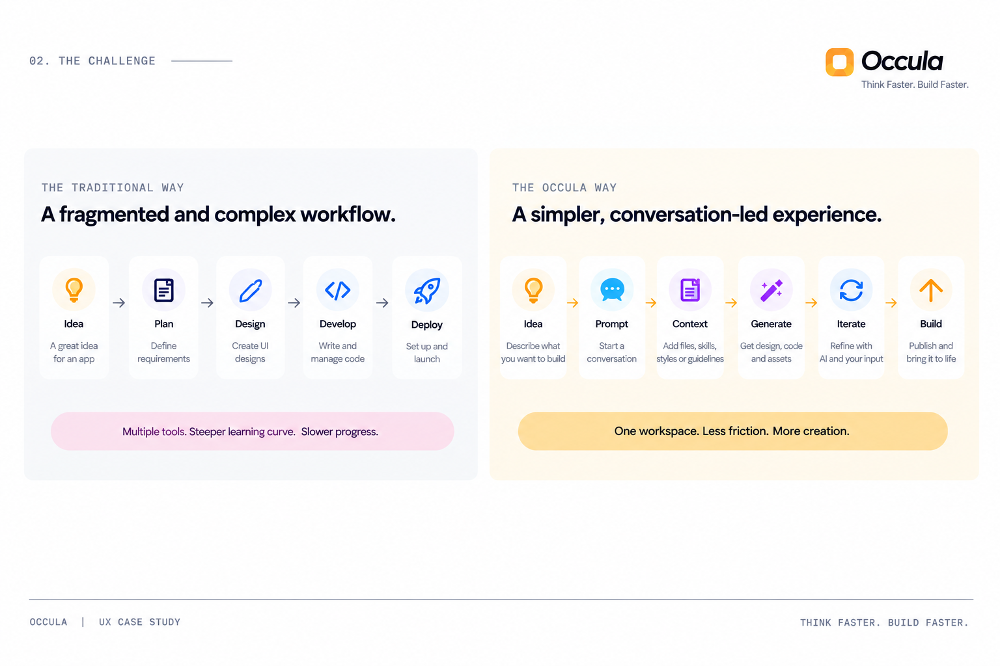
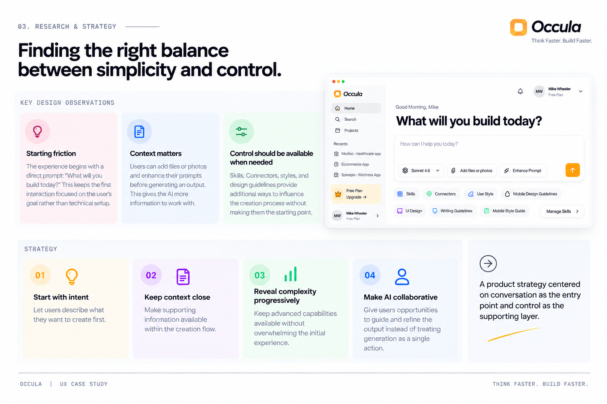
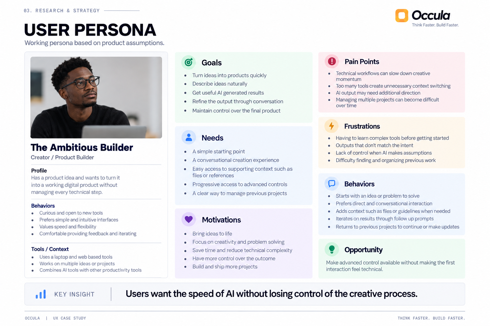
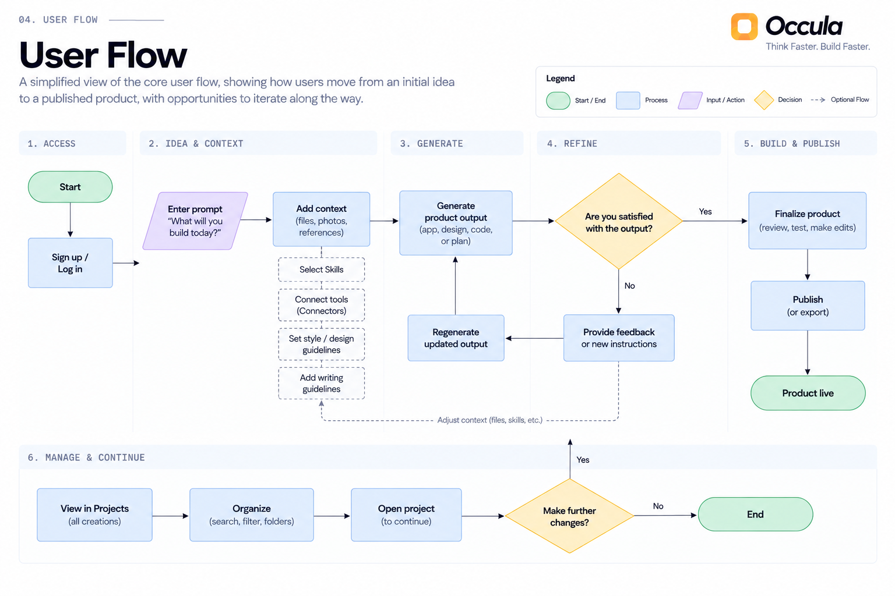
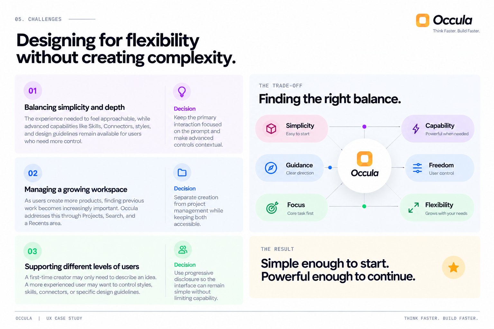

Think Faster. Build Faster.
Occula is an AI app builder that helps people turn ideas into digital products through conversation. The experience brings prompting, project management, files, skills, design guidance, connectors, code generation, and publishing into one unified workspace.

Building an app should start with an idea, not a technical workflow.
Occula brings together AI conversation, projects, files, skills, design guidance, connectors, and generated outputs in one workspace. The interface is designed to let users begin with a simple prompt and progressively add context as they build.
The core design challenge was to make this vast level of capability feel approachable without hiding the controls that give users direction and ownership.
Instead of making users navigate a complex creation process upfront, the experience centers around one intuitive question: “What will you build today?”
From there, users can attach files or photos, enhance their prompt, apply specialized skills and styles, connect external tools, and establish design or writing guidelines.
| Workflow Model | Stages | Experience Impact |
|---|---|---|
| Traditional Workflow | Idea → Plan → Design → Develop → Deploy | Multiple disconnected tools. Steeper learning curve. Slower progress. |
| The Occula Way | Idea → Prompt → Context → Generate → Iterate → Build | One unified workspace. Less friction. More creation. |
The goal was not simply to add more AI capabilities. It was to create a clear, elegant experience where those capabilities appear at the exact right moment.

Finding the right balance between simplicity and control
Occula is built around a foundational principle: users should be able to start immediately with an idea, while maintaining complete control to shape what the AI creates.
The product integrates several capabilities into the creation flow: file uploads, prompt enhancement, Skills, Connectors, style selection, UI guidelines, writing guidelines, and mobile design guidance.
The result is a product strategy centered on conversation as the entry point and control as the supporting layer.

To guide design decisions, I defined a working persona around the creator Occula is designed to empower. The Ambitious Builder has a clear product vision and wants to move from concept to working product quickly without getting bogged down by technical friction.
This persona framed the core design tension: how can Occula deliver the speed and leverage of AI while giving creators the control they need to shape the outcome? This directly informed how prompting, context, Skills, Connectors, and guidelines were structured.

From a simple prompt to a complete product workflow
The experience is designed around a clear progression: creators start with an idea, add supporting context, generate an output, and iterate through natural conversation. The interface keeps the primary creation area front-and-center while making supporting capabilities available contextually.
| Phase | User Action | System Role |
|---|---|---|
| 1. Idea | Defines intent and problem to solve | Provides clean, focused entry point |
| 2. Prompt | Describes app concept in natural language | Suggests prompt enhancements & parameters |
| 3. Context | Attaches files, selects skills & connectors | Integrates external tools & design guidelines |
| 4. Generate | Triggers build process | Generates UI designs, code, and live preview |
| 5. Iterate | Tests output and provides conversational feedback | Refines code, adjusts styles, and regenerates |
| 6. Build | Finalizes and publishes application | Deploys live product and saves to Projects |
The user flow maps how a creator moves through Occula, from entering an idea to generating, refining, and publishing a product. The flow keeps the primary path simple while allowing users to add context through files, Skills, Connectors, and design guidelines.
A key part of the experience is the refinement loop. Users can review generated outputs, provide follow-up instructions, adjust context, and iterate until the product matches their standards.

Designing for flexibility without creating complexity
Occula unites a broad set of capabilities into one product. The challenge was not simply deciding what features to include, but determining how much complexity users should see at each stage.
| Challenge | Design Decision |
|---|---|
| 01. Balancing simplicity and depth The creation screen needs to feel approachable, while advanced features (Skills, Connectors, guidelines) remain accessible. |
Contextual Controls: Keep the primary interaction focused on the conversational prompt and make advanced controls contextual and progressive. |
| 02. Managing a growing workspace As users build more apps, finding and organizing past work becomes crucial. |
Structured Workspace: Separate creation from project management while keeping Projects, Search, and Recents easily accessible in the primary navigation. |
| 03. Supporting different user levels First-time builders need a simple prompt; power users need granular control over styles, connectors, and tokens. |
Progressive Disclosure: Allow beginners to launch with pure conversation while giving power users quick access to architectural levers. |

A clearer path from idea to product
The final experience brings Occula's capabilities into one unified creation workflow. Creators can start with a simple conversation, inject rich context when needed, refine the output collaboratively with AI, and manage multiple digital products from a single workspace.
The defining outcome was establishing a clear, intuitive relationship between intent, context, generation, and iteration. Instead of overwhelming creators upfront, Occula introduces advanced tools dynamically as they become relevant to the workflow.
Designing an AI product is not merely about showcasing what an AI model can do. It is about understanding how much control the user needs and when that control should appear.
For Occula, this meant starting with frictionless simplicity while providing the depth and architectural precision needed to build real, scalable digital products.